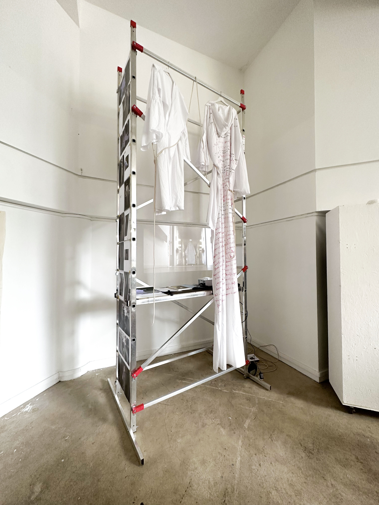

01 / 03
La mode et la mort
Inspiré du Dialogue de la Mode et de la Mort de Giacomo Leopardi, le projet observe le vêtement comme forme passagère, image sociale et enveloppe du corps. L’installation met en tension l’apparence, la mélancolie et la mortalité.